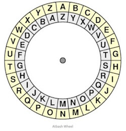

La crittografia consiste in dei metodi per rendere un messaggio non comprensibile a persone non autorizzate a leggerlo, garantendo così, in chiave moderna, il requisito di confidenzialità o riservatezza tipico della sicurezza informatica.
Un tale messaggio si chiama comunemente crittogramma e i metodi usati sono detti tecniche di cifratura.
Questa pratica ha una lunga storia che risale a migliaia di anni fa.
Gli antichi egizi usavano geroglifici complessi e altre tecniche per proteggere i loro messaggi.
Gli Ebrei utilizzavano il codice di Atbash: semplice cifrario a sostituzione monoalfabetica in cui la prima lettera dell'alfabeto è sostituita con l'ultima, la seconda con la penultima, e così via, "invertendo" l'ordine alfabetico delle lettere.

Gli Spartani avevano un sistema chiamato Scitala.
Gaio Giulio Cesare ha usato il cifrario che porta il suo nome; Il cifrario di Cesare.
Tuttavia, la crittografia moderna, come la conosciamo oggi, è nata e si è evoluta nel corso del tempo in risposta a esigenze sempre più complesse di sicurezza delle comunicazioni...